측량및지형공간정보기사 (2018-09-15 기출문제)
1과목: 측지학 및 위성측위시스템
1. 지상에서 인공위성의 위치를 관측하는 방법에 대한 설명으로 틀린 것은?
- 전파의 속도를 이용하여 관측
- 전파의 도플러효과를 이용하여 관측
- 레이저의 왕복시간을 이용하여 관측
- 하나의 관측점에서 촬영된 사진상의 위성과 그 배경에 있는 별들의 각, 거리를 관측
(정답률: 67%)

2. 석유탐사의 주요 방법으로 일반적으로 지표면으로부터 깊은 곳의 탐사에 적합한 탄성과 측정방법은?
- 굴절법
- 반사법
- 굴착법
- 충격법
(정답률: 78%)
3. 지구의 단면도를 그릴 때, 적도 반지름을 200cm로 그린다면 극 반지름은? (단, 지구의 편평율은 1/299로 한다.)
- 199.67cm
- 199.56cm
- 199.45cm
- 199.33cm
(정답률: 53%)
4. 지구의 곡률로부터 생기는 길이의 오차를 1/2000000까지 허용하면 반지름 몇 km 이하를 평면으로 보는가? (단, 지구 곡률 반지름은 6370km이다.)
- 22.0km
- 15.6km
- 12.8km
- 7.8km
(정답률: 53%)
5. GNSS 측량에서 전리층의 영향에 대한 설명으로 틀린 것은?
- 반송파의 경우 전리층 지연이 음수(축소)가 된다.
- 코드 신호의 경우 전리층 지연이 양수(연장)가 된다.
- 전리층 지연효과는 선형조합으로 소거할 수 없다.
- 태양활동, 지역, 계절, 주야에 따라 달라진다.
(정답률: 66%)
6. 전파망원경을 이용하여 지구표면의 위치를 수 mm 정도로 정확하게 측정할 수 있어 지구자전, 대륙이동의 측정 및 측지원점 결정 등에 활용되는 것은?
- VLBI
- GPS
- GLONASS
- SLR
(정답률: 69%)
7. GNSS에 의한 위치결정에 있어서 가장 중요한 관측요소로 옳은 것은?
- 위성과 수신기 사이의 거리
- 위성신호의 전송데이터 량
- 위성과 수신기 사이의 각
- 위성과 수신기의 안테나 길이
(정답률: 75%)
8. GNSS(Global Navigational Satellite System) 위성과 관련 없는 것은?
- GPS
- KH-11
- GLONASS
- Galileo
(정답률: 76%)
9. GNSS 측량의 특징에 대한 설명으로 옳지 않은 것은?
- 24시간 측량이 가능하다.
- 날씨, 기상에 관계없이 위치결정이 가능하다.
- EDM과 같은 TWO-WAY 시스템이다.
- 기선결정의 경우, 두 측점 간 시통 여부와는 무관하다.
(정답률: 63%)
10. 지구상 한 점에서 지오이드에 대한 연직선이 천구의 적도면과 이루는 각으로 지오이드를 기준으로 한 위도는?
- 측지위도
- 천문위도
- 지심위도
- 화성위도
(정답률: 63%)
11. 다음 중 모호정수(ambiguity)를 제거하기 위한 GPS 측위 관측신호는?
- 차분되지 않은 반송파
- 단일차분된 반송파
- 이중차분된 반송파
- 삼중차분된 반송파
(정답률: 75%)
12. 위성의 기하학적 분포상태는 의사거리에 의한 단독측위의 선형화된 관측방정식을 구성하고 정규방정식의 역행렬을 활용하면 판단할 수 있다. 관측점 좌표 x, y, z 및 수신기시계 t에 대한 여인자 행렬(Q)의 대각선 요소가 각각 qxx=0.4, qyy=1.5, qzz=3.2, qtt=1.7일 때 관측점의 GDOP는?(오류 신고가 접수된 문제입니다. 반드시 정답과 해설을 확인하시기 바랍니다.)
- 2.608
- 3.557
- 3.942
- 6.800
(정답률: 41%)
13. GPS의 여러 오차 중 DGPS 기법으로 제거되지 않는 것은?
- 의사거리 측정오차
- 위성의 궤도정보 오차
- 전리층에 의한 지연
- 대류권에 의한 지연
(정답률: 49%)
14. 우리나라 평면 직각좌표의 원점은 어떻게 구성되어 있는가?
- 서해, 내륙, 중부, 동해 원점
- 동부, 서부, 내부, 중부 원점
- 동부, 서부, 중부, 동해 원점
- 동해, 남부, 북부, 중부 원점
(정답률: 79%)
15. 도심지와 같이 장애물이 많은 경우 특히 증대되는 GNSS 관측오차는?
- 궤도 오차
- 다중경로 오차
- 대기 굴절 오차
- 전리층 지연 오차
(정답률: 67%)
16. UTM 좌표에 관한 설명으로 틀린 것은?
- 한 구역은 경도 6°의 크기이다.
- 거리좌표는 m단위이다.
- 극지방으로 갈수록 왜곡이 증가하여 극지방에서는 UPS 좌표를 사용한다.
- 중앙자오선 상에서의 축적계수는 5.0이다.
(정답률: 71%)
17. 중력이상의 주된 원인이 되는 것은?
- 지하물질의 밀도 분포
- 대기의 대류 현상
- 태양과 달의 인력
- 지구의 공전 운동
(정답률: 76%)
18. 다음 중 중력의 보정 요소가 아닌 것은?
- 지형보정
- 고도보정
- 부게보정
- 연직각 보정
(정답률: 65%)
19. 지구의 자장과 거의 일치하는 쌍극자(막대자석)를 지구 중심에 위치시킬 때 쌍극자의 연장선이 지표와 만나는 점을 무엇이라고 하는가?
- 천극
- 지자기극
- 황극
- 적도
(정답률: 71%)
20. 타원체 상에서 같은 경도의 점을 연결한 선을 무엇이라고 하는가?
- 자오선
- 평행선
- 위도선
- 측지선
(정답률: 59%)
2과목: 응용측량
21. 심프슨법칙에 대한 설명으로 틀린 것은?
- 심프슨법칙을 이용하는 경우, 지거 간격은 균등하게 하여야 한다.
- 심프슨의 제1법칙을 1/3법칙이라고도 한다.
- 심프슨의 제2법칙을 3/8법칙이라고도 한다.
- 심프슨의 제2법칙은 사다리꼴 2개를 1조로 하여 3차 포물선으로 생각하여 면적을 구한다.
(정답률: 64%)
22. 노선측량의 곡선에 관한 설명 중 옳지 않은 것은?
- 반지름이 다른 2개의 원곡선이 1개의 공통접선으로 갖고 접선의 같은 쪽에서 연결하는 곡선을 복심곡선이라 한다.
- 2개의 원곡선이 1개의 공통접선의 양쪽에 서로 곡선중심을 가지고 연결한 곡선을 반향곡선이라 한다.
- 도로의 곡선은 크게 수평곡선과 수직곡선으로 나누어지며, 수평곡선에는 종단곡선, 횡단곡선 등이 있고 수직곡선에는 단곡선, 완화곡선 등이 있다.
- 완화곡선은 곡선과 직선부 사이에 설치하는 곡선으로 반지름이 무한대에서 점차 작아져서 원곡선의 반지름과 같게 한다.
(정답률: 54%)
23. 하천의 심천측량을 하기 위해 그림과 같이 AB선에 직각으로 기선 AD=60m를 관측하였다. 위치 P에서 관측장비를 사용하여 ∠APD=50°를 측정하였다면 AP의 거리는?
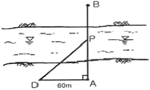
- 50.3m
- 63.2m
- 71.5m
- 85.5m
(정답률: 54%)
24. 그림과 같은 배수로의 배수단면적 계산공식으로 옳은 것은?
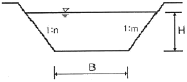
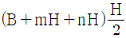
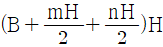
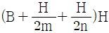
- (B+mH+nH)H
(정답률: 56%)
25. 반지름(R)=150m, 외할(E)=4.64m인 원곡선을 동일한 교각을 갖는 외할(E')=7.64m의 원곡선으로 변경할 때 구성되는 새로운 원곡선의 반지름은?
- 97m
- 138m
- 235m
- 247m
(정답률: 44%)
26. 교각이 120° 30‘이고 곡선반지름이 550m인 단곡선 교점까지의 추가거리가 1250.30m일 때 시단현 길이(l1)과 종단현 길이(l2)로 옳은 것은?
- l1=8.00m, l2=4.72m
- l1=8.00m, l2=15.28m
- l1=12.00m, l2=4.72m
- l1=12.00m, l2=15.28m
(정답률: 48%)
27. 음향측심기를 사용하여 수심측량을 실시한 결과, 송신음파와 수신음파의 도달시간차가 4초이고 수중음속이 1000m/s이면 수심은?
- 1800m
- 2000m
- 2200m
- 4000m
(정답률: 55%)
28. 그림과 같은 터널측량에서 A, B 두 점간의 고도차는? (단, I.H=2.45m, H.P=3.10m, 경사각 α=5° 30‘, 경사거리 S'=58.40m)
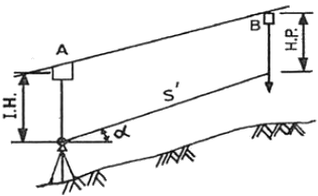
- 4.95m
- 4.97m
- 6.25m
- 6.27m
(정답률: 48%)
29. 터널 내 측량에 대한 설명으로 틀린 것은?
- 결합 트래버스에 의한 측량이므로 누적오차 발생을 확인하기 쉽다.
- 습기, 먼지, 소음, 어둠 등으로 측량조건이 매우 불량하다.
- 굴착면의 변위방생으로 설치한 기준점의 변형이 수반될 수 있다.
- 좁고 길며 밀폐된 공간의 측량으로서 후시의 경우 거리가 짧고 예각 발생의 경우가 오차 발생 요인이 많다.
(정답률: 68%)
30. 그림과 같은 초지의 1변 BC에 평행한 선으로 면적을 m:n=1:4의 비율로 분할하고자 할 경우 A, B의 길이가 120m라면 AX의 길이는?
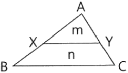
- 32.5m
- 38.7m
- 45.6m
- 53.7m
(정답률: 38%)
31. 도로의 중심선을 시점 No.0에서 No.7까지 20m씩 종단측량한 결과의 일부가 표와 같다. 도로 계획선의 기울기가 상향 1/100이고 No.4에서 지반고와 계획고가 같다고 할 때, No.3의 성토고(A)와 No.5의 정토고(B)는?
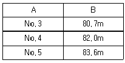
- A=1.0m, B=1.3m
- A=1.1m, B=1.4m
- A=1.2m, B=1.5m
- A=1.3m, B=1.6m
(정답률: 44%)
32. 하천측량에서 그림과 같이 깊이에 따른 유속(m/s)을 얻었을 때, 3점법에 의한 평균유속은?
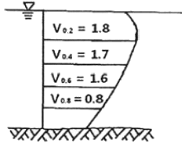
- 1.40m/s
- 1.43m/s
- 1.45m/s
- 1.50m/s
(정답률: 53%)
33. 상ㆍ하수도, 가스 통신 등의 건설 및 유지관리를 위한 자료제공의 역할을 하는 측량은?
- 초구장측량
- 관계배수측량
- 건축측량
- 지하시설물측량
(정답률: 68%)
34. 터널 입ㆍ출구 A, B점에 대한 관측결과가 표와 같을 때, 두 지점을 연결하는 터널의 경사각은?
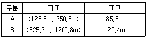
- 3° 18‘ 53“
- 5° 15‘ 28“
- 6° 20‘ 33“
- 7° 18‘ 53“
(정답률: 50%)
35. 하천측량에 관한 설명으로 옳지 않은 것은?
- 갈수위란 355일 이상 이 수위보다 적어지지 않는 수위를 말한다.
- 평균수위란 어떤 기간의 수위 중 이보다 높은 수위와 낮은 수위의 관측획수가 같은 수위이다.
- 수위관측소는 상ㆍ하류의 길이가 약 100m 정도는 직선이어야 하고 유속변화가 크지 않아야 한다.
- 수위관측소는 평상시나 홍수 때도 쉽게 관측할 수 있는 곳이어야 한다.
(정답률: 50%)
36. 철도의 곡선부에서 뒷바퀴보다 안쪽을 지나게 되므로 직선부보다 넓은 폭이 필요하게 되는데 이 넓히는 양을 무엇이라고 하는가?
- 캔트(cant)
- 슬랙(slack)
- 전도
- 횡거
(정답률: 59%)
37. 축척 1:5000 지형도 상에서 면적이 40.52cm2 이었다면 실제 면적은?
- 0.01km2
- 0.1km2
- 1.0km2
- 10.0km2
(정답률: 50%)
38. 하천측량에서 수애선(水涯線)의 측량에 대한 설명으로 틀린 것은?
- 수면과 하안(河岸)의 경계선을 수애선이라 한다.
- 심전측량에 의한 방법을 이용할 때에는 수위의 변화가 적은 시기에 심천측량을 행하여 하천의 횡단면도를 작성한다.
- 수애선의 측량에는 심천측량에 의한 방법과 동시관측에 의한 방법이 있다.
- 수애선은 하천 수위에 따라 변동하는 것으로 갈수위에 의하여 정해진다.
(정답률: 56%)
39. 국제수로기구(IHO)에서 안전항해를 위한 기준 중의 하나로써 수심측량 등급분류에 해당되지 않는 것은?
- 특등급
- 1a등급
- 2등급
- 기초등급
(정답률: 51%)
40. 클로소이드 곡선에서 곡선길(L)=40m, 매개변수(A)=100m일 경우 접선각은?
- 4° 35‘ 01“
- 4° 55‘ 01“
- 5° 15‘ 01“
- 5° 35‘ 01“
(정답률: 37%)
3과목: 사진측량 및 원격탐사
41. 사람이 두 눈으로 물체를 볼 때 멀리 볼 수 있는 수렴각의 최소한계를 20“, 안기성장(eye base)을 65mm라 하면 원근감을 느낄 수 있는 최대한 거리는?
- 670m
- 560m
- 450m
- 185m
(정답률: 45%)
42. 원격탐사(Remote sensing)에 대한 설명으로 옳지 않은 것은?
- 자료가 대단히 많으며 불필요한 자료가 포함되는 경우가 있다.
- 물체의 반사 스펙트럼 특성을 이용하여 대상물의 정보 추출이 가능하다.
- 위성에 의한 원격탐사는 높은 고도에서 좁은 시야각에 의하여 촬영되므로 중심투영에 가까운 영상이 촬영된다.
- 자료 취득 방법에 따라 수동적 센서에 의한 것과 능동적 센서에 의한 방법으로 분류할 수 있다.
(정답률: 58%)
43. 입체시된 항공사진 상에서의 과고감에 대한 설명으로 옳은 것은?
- 실제지형의 기복과 동일하게 나타난다.
- 촬영 위도에 따라 실제 지형의 기복보다 과소할 수도 과대할 수도 있다.
- 실제 지형의 기복보다 과소하게 나타난다.
- 실제 지형의 기복보다 과대하게 나타난다.
(정답률: 61%)
44. 일반사진기와 비교하여 항공측량용 사진기의 특성으로 옳은 것은?
- 렌지지름이 작다.
- 왜곡이 적다.
- 초점길이가 짧다.
- 화각(피사각)이 작다.
(정답률: 60%)
45. 평탄한 초지를 활용한 연직사진의 주점을 지나는 직선 위에 두 점 A, B가 있고, 두 점의 사진상 거리가 10cm, 지상수평거리가 500m이었다면 이 사진이 축척은?
- 1:500
- 1:1000
- 1:2000
- 1:5000
(정답률: 57%)
46. 위성영상을 이용한 정규식생지수(NDVI)를 산출하는 공식으로 옳은 것은?
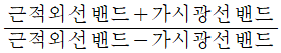
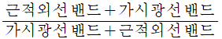
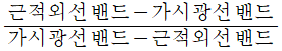
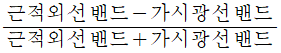
(정답률: 62%)
47. GNSS 수신기를 탐재하여 항공삼각측량을 수행할 경우의 장점으로 옳은 것은?
- 내부표정을 생략할 수 있다.
- 사진의 중복도를 작게 할 수 있다.
- 야간에도 항공사진측량이 가능하다.
- 지상기준점의 수를 줄일 수 있다.
(정답률: 63%)
48. 편위수정을 거친 사진을 집성하여 만든 사진지도는?
- 중심투영 사진지도
- 약조정집성 사진지도
- 반조정집성 사진지도
- 조정집성 사진지도
(정답률: 58%)
49. 수치고도모형(Digital Elevation Model)의 생성방법이 아닌 것은?
- 단일 고해상도 위성영상을 좌표변환하여 생성한다.
- 항공레이더에서 취득한 3차원 좌표를 격자화하여 생성한다.
- 위성 SAR 영상에 Rader Interferometry 기법을 적용하여 생성한다.
- 중복항공영상에 영상정합을 통해 생성한 3차원 좌표를 격자화하여 생성한다.
(정답률: 38%)
50. 인공위성에서 촬영된 다중분광센서(MSS) 영상의 활용으로 가장 적합한 것은?
- 입체 시각화에 의한 지형분석
- 영상분류에 의한 토지이용 분석
- 대축척 수치지도 제작
- 야간이나 악천후 중 재해 모니터링
(정답률: 56%)
51. 우리나라 위성 중 정자궤도를 채택하면서 최초로 기상관측 목적의 센서를 탑재한 위성은?
- 아리랑 위성
- 무궁화 위성
- 천리안 위성
- 우리별 위성
(정답률: 61%)
52. 스트립 조정법으로 항공사진측량을 수행할 경우 필요한 최소의 3차원 지상기준점 개수는?
- 1개
- 3개
- 6개
- 9개
(정답률: 43%)
53. 사진 상의(10mm, 10mm) 위치에 도로선의 교차점이 관측되었다. 이 지점의 지상좌표계 X값이 160m이면, Y값은? (단, 주점의 위치는 (-1mm, 1mm)이고, 지상의 투영중심은 (50m, 50m, 1530m)이며, 사진좌표계와 지상좌표계의 모든 좌표계의 모든 좌표측의 방향은 일치한다.)
- Y=140m
- Y=160m
- Y=-140m
- Y=-160m
(정답률: 33%)
54. 사진측량에서의 모델(Model)에 대한 정의로 가장 알맞은 것은?
- 1쌍의 중복된 사진으로 입체시 되는 부분이다.
- 어느 지역을 대표할 만한 사진이다.
- 편위수정(偏位修正)을 한 사진이다.
- 촬영된 1장의 사진이다.
(정답률: 65%)
55. 다음 중 병충해 조사 및 삼림조사, 홍수지역의 판독 등에 가장 적합한 사진은?
- 팬크로 사진
- 적외선 사진
- 자외선 사진
- 흑백 사진
(정답률: 61%)
56. 절대표정에 필요한 지상기준점의 구성으로 적합한 것은?
- 상호독립적인 수평기준점(X, Y) 4개
- 동일 직선상에 존재하는 지상기준점(X, Y, Z) 3개
- 상호독립적인 수평기준점(X, Y) 2개와 수직기준점(Z) 3개
- 상호독립적인 지상기준점(X, Y, Z) 2개
(정답률: 63%)
57. 항공사진측량에서 어떤 지역을 촬영하고 다시 재촬영해야 할 경우가 아닌 것은?
- 항공기의 고도가 계획촬영 고도의 15% 이상 벗어난 경우
- 촬영시 노출의 과소, 연기 및 안개, 스모그, 촬영셔터의 기능 불능 등으로 사진의 영상이 선명하지 못한 경우
- 적설 또는 홍수로 인하여 지형을 구별할 수 없어 도화가 불가능하다고 판정될 경우
- 촬영 진행방향의 중복도가 산악지역에서 70~80% 이상으로 촬영한 경우
(정답률: 66%)
58. 다음 중 공간해상도가 가장 좋은 센서를 탑재한 것은?
- IKONOS
- LANDSA-7
- KOMPSAT-1
- JERS-1
(정답률: 53%)
59. 사진측량으로 도심지역의 수치지도를 작성할 경우 사진의 해상도를 읿정하게 유지시키면서 고층건물에 의해 발생하는 폐색지역(occlusion area)을 감소시킬 수 있는 방법은?
- 촬영고도를 높게 한다.
- 촬영고도를 낮게 한다.
- 동일한 촬영고도에서 사진의 중복도를 크게 한다.
- 동일한 촬영고도에서 사진의 중복도를 작게 한다.
(정답률: 64%)
60. 상호표정 요소를 해석적인 방법으로 구할 때 종시차 방정식의 관측값으로 필요한 자료는?
- 공액점의 y 좌표
- 공액점의 x 좌표
- 연직점의 z 좌표
- 연직점의 x 좌표
(정답률: 63%)
4과목: 지리정보시스템
61. 지리정보시스템(GIS)의 데이터베이스 구조와 거리가 먼 것은?
- 관망(Netwoek)구조
- 관계(Relational)구조
- 계층(Hierarchcal)구조
- 3차원(3-Dimensional)구조
(정답률: 57%)
62. 다음 용어에 대한 설명 중 옳지 않은 것은?
- Clip : 원래 레이어에서 필요한 지역만을 추출해 내는 것이다.
- Ease : 경계 외부의 대상물을 보존하는 동안 경계 내의 대상물을 지우는 것이다.
- Spit : 하나의 레이어를 여러 개의 레이어로 분할한다.
- Intersect : 여러 개의 레이어가 하나의 레이어로 합쳐지면서 도형정보와 속성정보가 합쳐진다.
(정답률: 55%)
63. 지리정보를 효율적으로 관리하기 위한 도구로써 DBMS의 특징과 거리가 먼 것은?
- 중앙제어기능
- 시스템의 단순성
- 효율적인 자료호환
- 다양한 양식의 자료제공
(정답률: 51%)
64. 다음은 지리정보시스템(GIS)에서의 표준화 유형 중 무엇에 관한 설명인가?
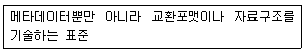
- 데이터 표준
- ISO6709
- 기술 표준
- 실무 표준
(정답률: 60%)
65. 지리정보시스템(GIS) 자료를 도형자료와 속성재료로 구분할 때, 도형자료에 해당되는 것은?
- 관거 재질
- 관거 형상
- 관거 매설 년도
- 관거 관리 이력
(정답률: 65%)
66. 다음 중 사용자가 데이터베이스에 접근하여 데이터를 처리할 수 있도록 하는 것으로 데이터의 검색, 삽입, 삭제 및 갱신 등과 같은 조작을 하는 데 사용되는 데이터 언어는?
- DCL(Date Control Language)
- DDL(Date Definition Language)
- DLL(Date Link Language)
- DML(Date Manipulation Language)
(정답률: 50%)
67. 지리정보시스템(GIS)에서 지형의 상태를 나타내는 수치표고자료 형태로서 맞지 않는 것은?
- DEM(Digital Elevation Model)
- DLM(Digital Line-graph Model)
- DSM(Digital Surface Model)
- DTM(Digital Terrain Model)
(정답률: 54%)
68. 필지간의 위상관계 중 주어진 연속지적도에서 본인의 대지와 접해있는 이웃 대지들의 정보를 얻기 위해 사용하는 위상관계는?
- 인접성(adjacency)
- 연결성(connectivity)
- 방향성(direction)
- 포함성(containment)
(정답률: 64%)
69. 지리정보자료의 정확도 향상을 위한 방법으로 옳지 않은 것은?
- 신뢰도가 높은 자료와 낮은 자료의 혼합사용
- 품질관리 규정의 마련 및 준수
- 속성정보 수집의 객관성 확보
- 정확도 검증과정의 채택
(정답률: 70%)
70. TIN(Triangular Irregular Network)에 대한 설명으로 틀린 것은?
- TIN을 통해 생성되는 등고선은 모델에 상관없이 항상 동일하다.
- TIN을 삼각형(triangle)과 노드(nodes), 변(edges) 등으로 구성된다.
- 위상관계를 갖고 있기 때문에 경사도나 경사의 방향을 쉽게 구할 수 있다.
- 기복이 심한 지형이나 절단면들을 표현하는데 적합하다.
(정답률: 55%)
71. 그림은 6×6화소 크기의 래스터 데이터를 수치적으로 표현한 것이다. 이 데이터를 2×2 화소 크기의 데이터로 영상재배열 하고자 한다. 미디언필터(Median Fiter)를 이용하여 2×2화소 데이터의 수치값을 결정하고자 할 때 결과로 옳은 것은?
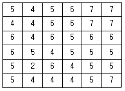
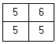
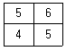
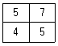
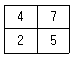
(정답률: 58%)
72. 다음의 조건을 따르는 SQL문으로 알맞은 것은?
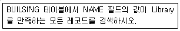
- SELECT BUILDING FROM "NAME" WHERE 'Library'
- SELECT BUILDING FROM "NAME = 'Library'
- SELECT * FROM BUILDING WHERE "NAME" = Library'
- SELECT * FROM "NAME = 'Library' WHERE BUILDING
(정답률: 52%)
73. 벡터자료처리 중에서 발생되며 두 입력지도의 경계가 불일치할 때 경계부근에서 주로 생성되는 의미 없는 작은 polygon을 무엇이라 하는가?
- small polygon
- sliver polygon
- section polygon
- error polygon
(정답률: 65%)
74. 지리정보시스템(GIS)을 구현하기 위해 입력, 저장되는 공간자료의 형태로 적절치 않은 것은?
- Point
- Code
- Line
- Polygon
(정답률: 66%)
75. 수치지도 제작에 사용되는 용어에 대한 설명으로 틀린 것은?
- 좌표는 좌표계 상에서 지형ㆍ지물의 위치를 수학적으로 나타낸 값을 말한다.
- 도곽은 일정한 크기에 따라 분할된 지도의 가장자리에 그려진 결계선을 말한다.
- 메타데이터(metadata)는 작성된 수치지도의 결과가 목적에 부합하는지 여부를 판단하는 기준 데이터를 말한다.
- 수치지도작성은 각종 지형공간정보를 취득하여 전산시스템에서 처리할 수 있는 형태로 제작 또는 변환하는 일련의 과정이다.
(정답률: 64%)
76. 아래 두 테이블을 합집합(union)한 결과로 옳은 것은?
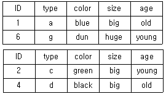
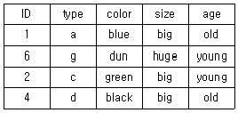
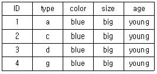
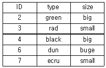
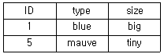
(정답률: 65%)
77. 지리정보시스템(GIS) 구축의 의의(목적)에 대한 설명으로 틀린 것은?
- 공간정보의 효율적 관리 수단
- 객관적 분석을 통한 공간의사 결정
- 공간정보 구축 및 활용 시장의 축소
- 공간정보 이용자의 범위 확대
(정답률: 66%)
78. 원격탐사 영상의 자료 융합에 있어서 고해상도의 전정색 영상과 저해상도의 컬러(RGB) 영상을 합성하여 고해상도의 컬러영상을 제작하는 과정으로 옳은 것은?
- RGB영상을 YMC영상으로 변환 → Y(yellow)를 전정색 영상으로 대체 → 다시 RGB영상으로 변환
- RGB영상을 YMC영상으로 변환 → M(magenta)를 전정색 영상으로 대체 → 다시 RGB영상으로 변환
- RGB영상을 IHS영상으로 변환 → I(intensity)를 전정색 영상으로 대체 → 다시 RGB영상으로 변환
- RGB영상을 IHS영상으로 변환 → H(hue)를 전정색 영상으로 대체 → 다시 RGB영상으로 변환
(정답률: 47%)
79. 아래 [알고리즘]을 참고하여 DEM 데이터에서 중앙 격자의 경사(%)와 경사향(방위각)을 구한 것으로 옳지 않은 것은? (단, 격자 상의 수치는 표고값(m)이며, 격자 간격은 100m이다.)(오류 신고가 접수된 문제입니다. 반드시 정답과 해설을 확인하시기 바랍니다.)
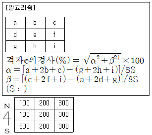
- 69%, 45°
- 69%, 315°
- 71%, 45°
- 71%, 315°
(정답률: 29%)
80. 지리정보시스템(GIS)에 대한 설명으로 옳지 않은 것은?
- 공간요소에 연계되 속성정보로 구축되었다.
- 저장, 갱신, 관리, 분석 및 출력이 가능한 체계이다.
- 공간적으로 배열된 형태의 자료를 처리한다.
- 주로 숫자의 처리 속도를 높여 사칙연산을 효율적으로 처리하기 위한 정보시스템이다.
(정답률: 61%)
5과목: 측량학
81. 측량기기의 특징에 대한 설명으로 옳지 않은 것은?
- 디지털 데오도라이트를 이용하여 각을 관측할 경우 각 읽음오차를 소거할 수 있다.
- 전자파거리측량기(EDM)로 거리를 관측할 경우 온도, 습도, 기압에 대한 영향을 보정해야 정확한 거리를 측정할 수 있다.
- 수준측량에 사용되는 레벨의 기표관 감도는 망원경의 확대배율로 표시한다.
- 평판측량에서 사용되는 보통엘리데이드는 시준공의 직경과 시준사의 굵기에 의해 시준오차가 발생한다.
(정답률: 42%)
82. 그림과 같은 트래버스에서 AL의 방위각이 19° 48‘ 26“, BM의 방위각이 310° 36’ 3”, 내각의 총합(∑α)이 1190° 47‘ 22“일 때 관측 오차는?
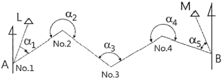
- -15“
- -25“
- -47“
- -55“
(정답률: 38%)
83. 보정전자파 에너지의 속도가 299712.9km/s, 변조주파수가 24.5MHz일 때 광파거리 측량기의 변조파장은?
- 8.17449m
- 12.23318m
- 16.344898m
- 24.46636m
(정답률: 50%)
84. 지오이드에 대한 설명으로 옳지 않은 것은?
- 위치에너지가 0(zero)이 되는 면이다.
- 평균해수면을 육지내부까지 연장한 면을 의미한다.
- 지구타원체를 기준으로 대륙에서는 낮고 해양에서는 높다.
- 지오이드의 법선과 타원체의 법선은 불일치하며 그 양을 연직선 편차라 한다.
(정답률: 50%)
85. 거리관측에 있어서 같은 경중률로 거리를 6회 관측하여 다음 결과를 얻었을 때, 최확값의 평균 제곱근 오차(표준오차)는?
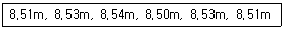
- ±0.0⑤m
- ±0.006m
- ±0.008m
- ±0.009m
(정답률: 35%)
86. 평균고도 300m의 두 지점 A, B간의 기선의 거리를 관측하였더니 수평거리가 400.423m이었다면 평균해수면상에 투영한
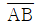
의 거리는? (단, 지구의 반지름은 6400km로 가정한다.)- 400.135m
- 400.235m
- 400.335m
- 400.404m
(정답률: 30%)
87. 축척 1:25000 지형도에서 등고선의 간격 및 표시에 대한 설명으로 옳은 것은?
- 계곡선의 간격은 50m이며, 굵은 실선으로 나타낸다.
- 주곡선의 간격은 20m이며, 가는 실선으로 나타낸다.
- 조곡선의 간격은 10m이며, 가는 파선으로 나타낸다.
- 간곡선의 간격은 5m이며, 가는 점선으로 나타낸다.
(정답률: 49%)
88. 50m에 대하여 11cm 늘어난 줄자로 두 점간의 거리를 관측하여 82.48의 관측값을 얻었다면 실제 거리는?
- 82.66m
- 82.53m
- 82.47m
- 82.3m
(정답률: 48%)
89. P점의 표고를 구하기 위해 수준점 A, B, C에서 수준측량을 실시하여 표와 같은 결과를 얻었다. P점의 최확값은?
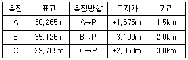
- 30.997m
- 31.325m
- 31.725m
- 31.945m
(정답률: 41%)
90. 트래버스 측량에서 거리관측 및 각관측의 정확도는 동등하게 하는 것이 좋다. 거리관측의 허용오차를 1/10000이라고 할 때 각관측의 허용오차는 약 얼마인가?
- 10“
- 20“
- 30“
- 40“
(정답률: 47%)
91. 등고선의 성질에 대한 설명으로 옳지 않은 것은?
- 등고선은 절벽이나 동굴 등의 특수한 지형 외에는 합치거나 교차하지 않는다.
- 경사가 일정한 사면에는 간격이 동일하다.
- 경사가 급할수록 등고선 간격을 넓어진다.
- 등고선은 분수선과 직교한다.
(정답률: 66%)
92. 삼각망의 내각을 같은 정밀도로 측량하여 변의 길이를 계산할 경우 각도의 오차가 변의 길이에 미치는 영향이 최소인 것은?
- 정삼각형
- 직각삼각형
- 예각삼각형
- 둔각삼각형
(정답률: 64%)
93. 삼각측량에서 단열삼각망의 활용에 대한 설명으로 옳은 것은?
- 광대한 지역의 지형도 작성을 위한 측량에 주로 활용된다.
- 노선, 하천 등의 폭이 좁고 거리가 먼 지역의 측량에 주로 활용된다.
- 복잡한 지역의 지형측량을 위한 세부측량에 주로 활용된다.
- 시가지와 같은 정밀을 요하는 측량에 주로 활용된다.
(정답률: 50%)
94. A점의 표고가 135m, B점의 표고가 113m일 때, 두 점 사이에 130m 등고선을 삽입한다면 이 등고선과 B점 사이의 수평거리는? (단, AB의 수평거리 250m이고, 등경사 구간이다.)
- 150.4m
- 170.5m
- 193.2m
- 203.9m
(정답률: 45%)
95. 공간정보의 구축 및 관리 등에 관한 법률에서 사용하는 용어의 정의로 옳지 않은 것은?
- 기본측량이란 모든 측량의 기초가 되는 공간정보를 제공하기 위하여 대통령이 실시하는 측량을 말한다.
- 측량성과란 측량을 통하여 얻은 최종결과를 말한다.
- 일반측량이란 기본측량, 공공측량, 지적측량 및 수로측량 외의 측량을 말한다.
- 측량기록이나 측량성과를 얻을 때ᄁᆞ지의 측량에 관한 작업의 기록을 말한다.
(정답률: 63%)
96. 공공측량성과 심사수탁기관은 성과심사의 신청을 받은 때에는 특별한 사유가 없는 경우에 접수일로부터 며칠 이내에 심사를 하여야 하는가?
- 7일
- 10일
- 20일
- 30일
(정답률: 48%)
97. 국가기준점 중 지리학적 경위도, 직각좌표, 지구중심 직교좌표, 높이 및 중력 측정의 기준으로 사용하기 위하여 위성기준점, 수준점 및 중력점을 기초로 정한 기준점은?
- 위성기준점
- 중력점
- 통합기준점
- 삼각점
(정답률: 65%)
98. 측량기기의 성능검사는 외관검사, 구조ㆍ기능검사 및 측정검사로 구분된다. 토털스테이션의 구조ㆍ기능검사 항목이 아닌 것은?
- 연직축 및 수평축의 회전상태
- 수평각 및 연직각의 정확도
- 기포관의 부착 상태 및 기포의 정상적인 움직임
- 광학중심장치 점검
(정답률: 29%)
99. 국가공간정보 기본법에 대하여 ()안에 공통적으로 들어갈 용어로 알맞은 것은?
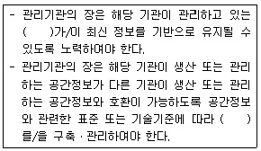
- 공간정보데이터베이스
- 위성측위시스템
- 국가공간정보센터
- 한국국토정보공사
(정답률: 62%)
100. 기본측량을 하려면 미리 기본측량의 실시공고를 하여야 하는데 이 때 포함되어야 할 사항과 거리가 먼 것은?
- 측량의 종류
- 측량의 목적
- 측량의 실시지역
- 측량의 용역 금액
(정답률: 65%)